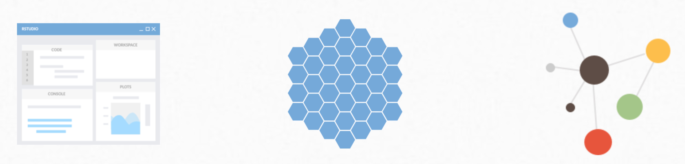

RStudio Team gives your organization access to the leading modular platform for data science, including:
RStudio Workbench to analyze data and create data products using R or Python in the RStudio IDE, Jupyter Notebooks, or JupyterLab
RStudio Connect to easily deploy, schedule, automate, and scale data products with the click of a button, including Shiny apps, R Markdown reports, Jupyter Notebooks, Flask APIs, Dash apps, and more.
RStudio Package Manager to control and manage R packages across the enterprise for governance and reproducibility.
Learn more about:
